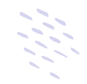

Hi! I’m
Sagita Pra Kosa
Universitas Wijaya Kusuma Surabaya Informatika
I develop functional web solutions including responsive applications and integrated systems that optimize business processes. Currently, I'm based in Surabaya
Year
.

About Me
Why you hire me for your next project?
Recent Informatics Engineering student at Universitas Wijaya Kusuma Surabaya with practical experience in web-based system development. Successfully developed a Digital Attendance System integrating Geolocation and Face Recognition features. Proficient in building responsive applications using PHP, JavaScript (including face-api.js), and MySQL. Currently expanding my skillset in Data Science and Python while seeking an internship or entry-level opportunity to apply my expertise in software engineering and database management.
Hire MePortfolio
My latest
awesome
Projects
+
+
+
Technologies
the skills I useTechnologies
These are real systems, platforms, and technologies I have built, deployed, and integrated in academic and professional projects.
Laravel
Sql
Python
MS Office
PHP
JavaScript